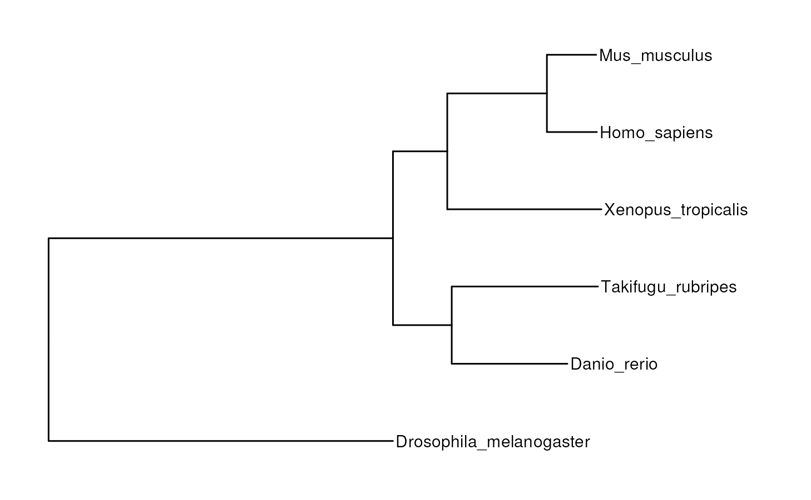
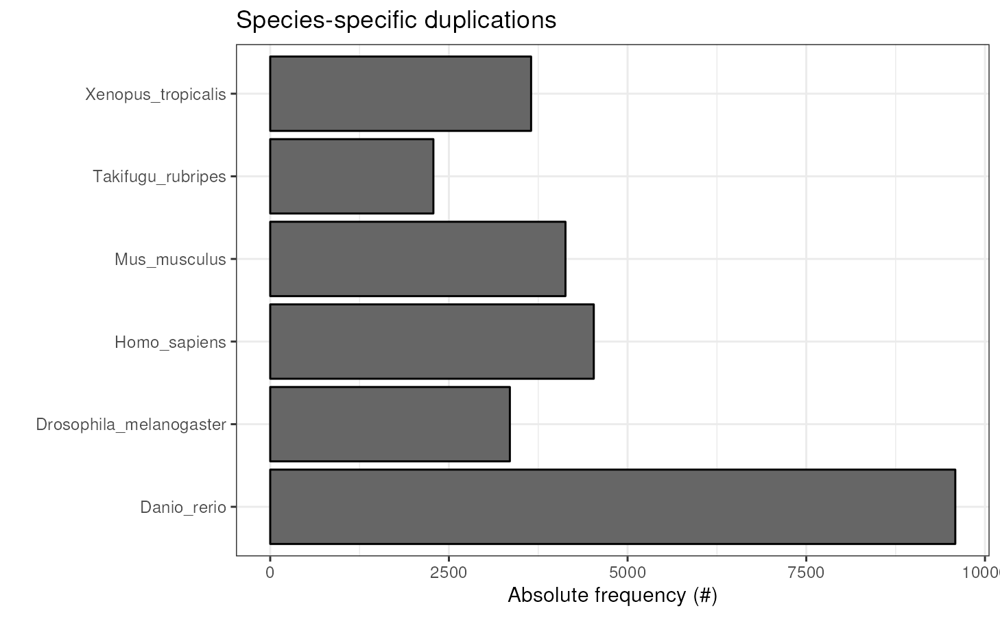
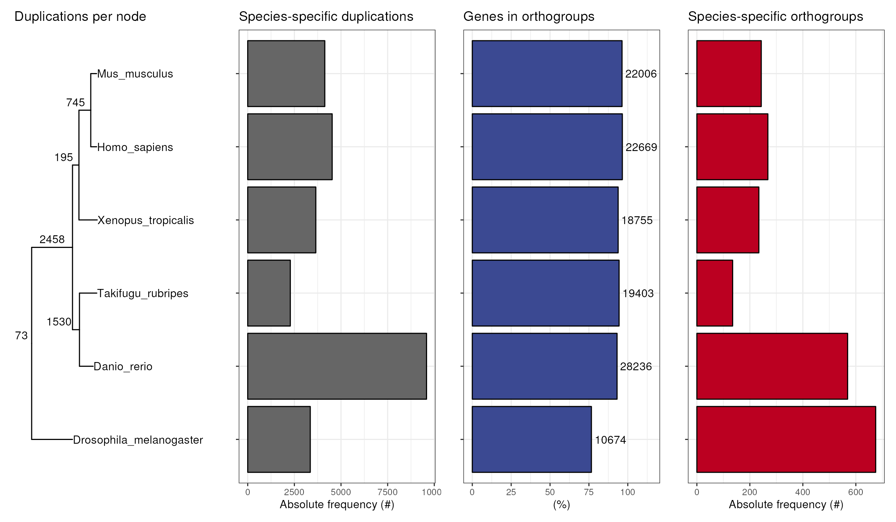
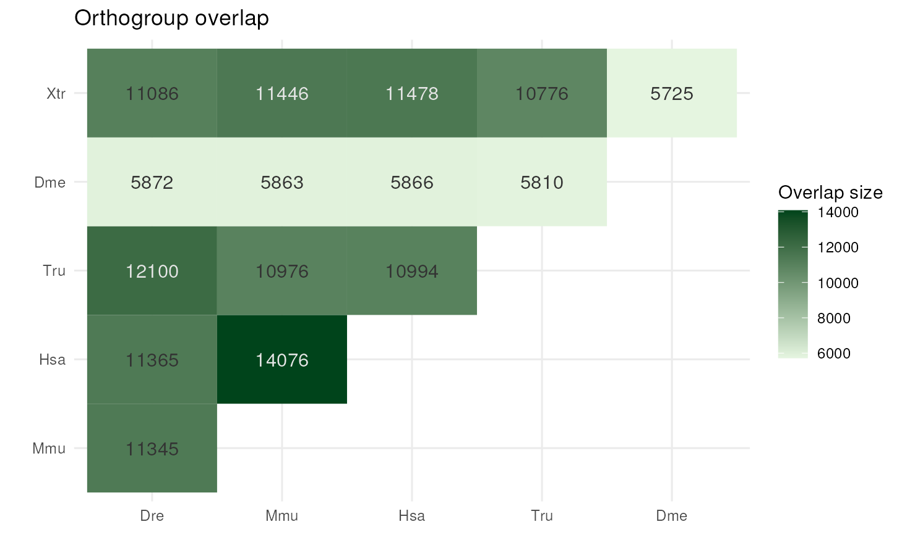
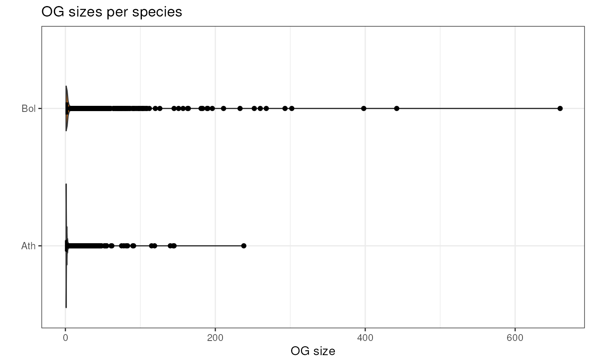
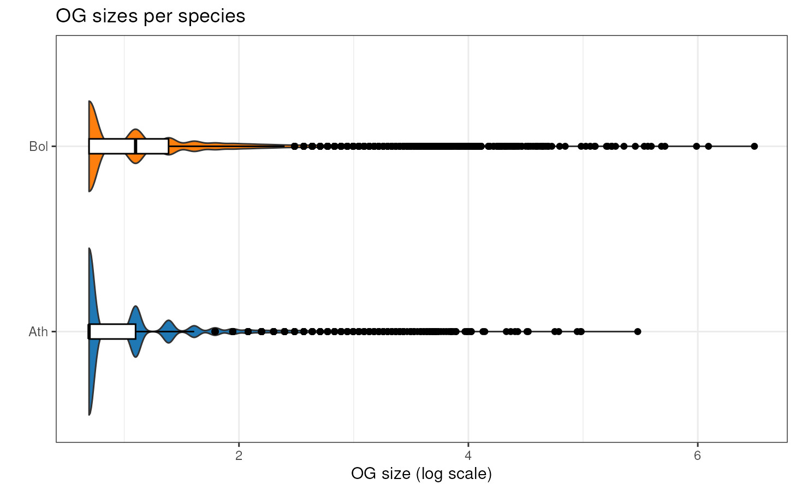
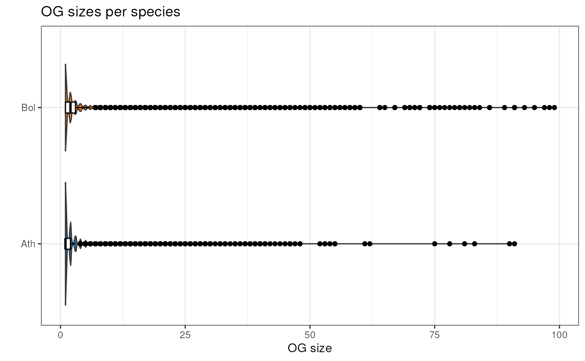

Assessing orthogroup inference
Fabricio Almeida-Silva
VIB-UGent Center for Plant Systems Biology, Ghent University, Ghent, BelgiumYves Van de Peer
VIB-UGent Center for Plant Systems Biology, Ghent University, Ghent, BelgiumSource:
vignettes/vignette_02_assessing_orthogroup_inference.Rmd
vignette_02_assessing_orthogroup_inference.RmdIntroduction
The identification of groups of homologous genes within and across species is a powerful tool for evolutionary genomics. The most widely used tools to identify orthogroups (i.e., groups of orthologous genes) are OrthoFinder (Emms and Kelly 2019) and OrthoMCL (Li, Stoeckert, and Roos 2003). However, these tools generate different results depending on the parameters used, such as mcl inflation parameter, E-value, maximum number of hits, and others. Here, we propose a protein domain-aware assessment of orthogroup inference. The goal is to maximize the percentage of shared protein domains for genes in the same orthogroup.
Installation
if(!requireNamespace('BiocManager', quietly = TRUE))
install.packages('BiocManager')
BiocManager::install("cogeqc")Data description
Here, we will use orthogroups from the PLAZA 5.0 database (Van Bel et al. 2021), inferred with OrthoFinder (Emms and Kelly 2019). For the purpose of demonstration, the complete dataset was filtered to only keep orthogroups for the Brassicaceae species Arabidopsis thaliana and Brassica oleraceae. Interpro domain annotations were also retrieved from PLAZA 5.0.
# Orthogroups for Arabidopsis thaliana and Brassica oleraceae
data(og)
head(og)
#> Orthogroup Species Gene
#> 1 HOM05D000001 Ath AT1G02310
#> 2 HOM05D000001 Ath AT1G03510
#> 3 HOM05D000001 Ath AT1G03540
#> 4 HOM05D000001 Ath AT1G04020
#> 5 HOM05D000001 Ath AT1G04840
#> 6 HOM05D000001 Ath AT1G05750
# Interpro domain annotations
data(interpro_ath)
data(interpro_bol)
head(interpro_ath)
#> Gene Annotation
#> 1 AT1G01010 IPR036093
#> 2 AT1G01010 IPR003441
#> 3 AT1G01010 IPR036093
#> 4 AT1G01020 IPR007290
#> 5 AT1G01020 IPR007290
#> 6 AT1G01030 IPR003340
head(interpro_bol)
#> Gene Annotation
#> 1 BolC1t00001H IPR014710
#> 2 BolC1t00001H IPR018490
#> 3 BolC1t00002H IPR013057
#> 4 BolC1t00003H IPR013057
#> 5 BolC1t00004H IPR005178
#> 6 BolC1t00004H IPR005178If you infer orthogroups with OrthoFinder, you can read and parse the
output file Orthogroups.tsv with the function
read_orthogroups(). For example:
# Path to the Orthogroups.tsv file created by OrthoFinder
og_file <- system.file("extdata", "Orthogroups.tsv.gz", package = "cogeqc")
# Read and parse file
orthogroups <- read_orthogroups(og_file)
head(orthogroups)
#> Orthogroup Species Gene
#> 1 HOM05D000001 Ath AT1G02310
#> 2 HOM05D000001 Ath AT1G03510
#> 3 HOM05D000001 Ath AT1G03540
#> 4 HOM05D000001 Ath AT1G04020
#> 5 HOM05D000001 Ath AT1G04840
#> 6 HOM05D000001 Ath AT1G05750Assessing orthogroups
In cogeqc, you can assess orthogroup inference with
either a protein domain-based approach or a reference-based approach.
Both approaches are described below.
Protein domain-based orthogroup assessment
The protein domain-based assessment of orthogroups is based on the formula below:
\[ \begin{aligned} Scores &= \frac{Homogeneity}{Dispersal} \\ \end{aligned} \]
The numerator, \(homogeneity\), is the mean Sorensen-Dice index for all pairwise combinations of genes in an orthogroup. The Sorensen-Dice index measures how similar two genes are, and it ranges from 0 to 1, with 0 meaning that a gene pair does not share any protein domain, and 1 meaning that it shares all protein domains. In a formal definition:
\[ \begin{aligned} Homogeneity &= \frac{1}{N_{pairs}} \sum_{i=1}^{N_{pairs}} SDI_{i} \\ \\ SDI(A,B) &= \frac{2 \left| A \cap B \right|}{ \left|A \right| + \left| B \right|} \end{aligned} \]
where A and B are the set of protein domains associated to genes A and B. This way, if all genes in an orthogroup have the same protein domains, it will have \(homogeneity = 1\). If each gene has a different protein domain, the orthogroup will have \(homogeneity = 0\). If only some gene pairs share the same domain, \(homogeneity\) will be somewhere between 0 and 1.
The denominator, \(dispersal\), aims to correct for overclustering (i.e., orthogroup assignments that break “true” gene families into an artificially large number of smaller subfamilies). It is the mean number of orthogroups containing the same protein domain corrected by the number of orthogroup. Formally:
\[ \begin{aligned} Dispersal &= \frac{1}{N_{domains} N_{OG}} \sum_{i=1}^{N_{domains}}D_{i} \\ \\ \end{aligned} \]
where \(N_{OG}\) is the number of orthogroups, and \(D_{i}\) is the number of orthogroups containing the protein domain \(i\). This term penalizes orthogroup assignments where the same protein domains appears in multiple orthogroups. As orthogroups represent groups of genes that evolved from a common ancestor, a protein domain being present in multiple orthogroups indicates that this domain evolved multiple times in an independent way, which is not reasonable from a phylogenetic point of view, despite convergent evolution.
To calculate scores for each orthogroup, you can use the function
assess_orthogroups(). This function takes as input a list
of annotation data frames1 and an orthogroups data frame, and returns
the relative homogeneity scores of each orthogroup for each species.
Note that if you don’t want to take the dispersal into account, you can
set correct_overclustering = FALSE. This will ignore the
denominator of the score formula.
# Create a list of annotation data frames
annotation <- list(Ath = interpro_ath, Bol = interpro_bol)
str(annotation) # This is what the list must look like
#> List of 2
#> $ Ath:'data.frame': 131661 obs. of 2 variables:
#> ..$ Gene : chr [1:131661] "AT1G01010" "AT1G01010" "AT1G01010" "AT1G01020" ...
#> ..$ Annotation: chr [1:131661] "IPR036093" "IPR003441" "IPR036093" "IPR007290" ...
#> $ Bol:'data.frame': 212665 obs. of 2 variables:
#> ..$ Gene : chr [1:212665] "BolC1t00001H" "BolC1t00001H" "BolC1t00002H" "BolC1t00003H" ...
#> ..$ Annotation: chr [1:212665] "IPR014710" "IPR018490" "IPR013057" "IPR013057" ...
og_assessment <- assess_orthogroups(og, annotation)
head(og_assessment)
#> Orthogroups Ath_score Bol_score Mean_score Median_score
#> 1 HOM05D000001 283.3132 271.9950 277.6541 277.6541
#> 2 HOM05D000002 129.9598 515.2557 322.6078 322.6078
#> 3 HOM05D000003 889.1268 848.1947 868.6607 868.6607
#> 4 HOM05D000004 0.0000 940.5871 470.2935 470.2935
#> 5 HOM05D000005 1135.8799 808.1998 972.0398 972.0398
#> 6 HOM05D000006 2820.8337 899.6528 1860.2433 1860.2433Now, we can calculate the mean score for this orthogroup inference.
mean(og_assessment$Mean_score)
#> [1] 1686.855Ideally, to have a reliable orthogroup inference, you should be able
to run OrthoFinder with multiple combinations of parameters and assess
each inference with assess_orthogroups(). The inference
with the highest mean homonegeneity will be the best.2
Reference-based orthogroup assessment
In some cases, you may want to compare your orthogroup inference to a
reference orthogroup inference. To do that, you can use the function
compare_orthogroups(). For example, let’s simulate a
different orthogroup inference by shuffling some rows of the
og data frame and compare it to the original data
frame.
set.seed(123)
# Subset the top 5000 rows for demonstration purposes
og_subset <- og[1:5000, ]
ref <- og_subset
# Shuffle 100 genes to simulate a test set
idx_shuffle <- sample(seq_len(nrow(og_subset)), 100, replace = FALSE)
test <- og_subset
test$Gene[idx_shuffle] <- sample(
test$Gene[idx_shuffle], size = length(idx_shuffle), replace = FALSE
)
# Compare test set to reference set
comparison <- compare_orthogroups(ref, test)
head(comparison)
#> Orthogroup Preserved
#> 1 HOM05D000001 FALSE
#> 2 HOM05D000002 FALSE
#> 3 HOM05D000003 FALSE
#> 4 HOM05D000004 TRUE
#> 5 HOM05D000005 FALSE
#> 6 HOM05D000006 TRUE
# Calculating percentage of preservation
preserved <- sum(comparison$Preserved) / length(comparison$Preserved)
preserved
#> [1] 0.2702703As we can see, 27.03% of the orthogroups in the reference data set are preserved in the shuffled data set.
Visualizing summary statistics
Now that you have identified the best combination of parameters for
your orthogroup inference, you can visually explore some of its summary
statistics. OrthoFinder automatically saves summary statistics in a
directory named Comparative_Genomics_Statistics. You
can parse this directory in a list of summary statistics with the
function read_orthofinder_stats(). To demonstrate it, let’s
read the output of OrthoFinder’s example with model species.
stats_dir <- system.file("extdata", package = "cogeqc")
ortho_stats <- read_orthofinder_stats(stats_dir)
ortho_stats
#> $stats
#> Species N_genes N_genes_in_OGs Perc_genes_in_OGs N_ssOGs
#> 1 Danio_rerio 30313 28236 93.1 569
#> 2 Drosophila_melanogaster 13931 10674 76.6 675
#> 3 Homo_sapiens 23480 22669 96.5 268
#> 4 Mus_musculus 22859 22006 96.3 243
#> 5 Takifugu_rubripes 20545 19403 94.4 135
#> 6 Xenopus_tropicalis 19987 18755 93.8 234
#> N_genes_in_ssOGs Perc_genes_in_ssOGs Dups
#> 1 3216 10.6 9585
#> 2 3313 23.8 3353
#> 3 1625 6.9 4527
#> 4 2022 8.8 4131
#> 5 446 2.2 2283
#> 6 1580 7.9 3650
#>
#> $og_overlap
#> Danio_rerio Drosophila_melanogaster Homo_sapiens
#> Danio_rerio 13472 5872 11365
#> Drosophila_melanogaster 5872 6651 5866
#> Homo_sapiens 11365 5866 14468
#> Mus_musculus 11345 5863 14076
#> Takifugu_rubripes 12100 5810 10994
#> Xenopus_tropicalis 11086 5725 11478
#> Mus_musculus Takifugu_rubripes Xenopus_tropicalis
#> Danio_rerio 11345 12100 11086
#> Drosophila_melanogaster 5863 5810 5725
#> Homo_sapiens 14076 10994 11478
#> Mus_musculus 14411 10976 11446
#> Takifugu_rubripes 10976 12649 10776
#> Xenopus_tropicalis 11446 10776 12302
#>
#> $duplications
#> Node Duplications_50
#> 1 Drosophila_melanogaster 3353
#> 2 Homo_sapiens 4527
#> 3 N0 73
#> 4 Takifugu_rubripes 2283
#> 5 Mus_musculus 4131
#> 6 Danio_rerio 9585
#> 7 N1 2458
#> 8 N2 1530
#> 9 N3 195
#> 10 N4 745
#> 11 Xenopus_tropicalis 3650Now, we can use this list to visually explore summary statistics.
Species tree
To start, one would usually want to look at the species tree to
detect possible issues that would compromise the accuracy of orthologs
detection. The tree file can be easily read with
treeio::read.tree().
data(tree)
plot_species_tree(tree)
You can also include the number of gene duplications in each node.
plot_species_tree(tree, stats_list = ortho_stats)Species-specific duplications
The species tree above shows duplications per node, but it does not
show species-duplications. To visualize that, you can use the function
plot_duplications().
plot_duplications(ortho_stats)
Genes in orthogroups
Visualizing the percentage of genes in orthogroups is particularly useful for quality check, since one would usually expect a large percentage of genes in orthogroups, unless there is a very distant species in OrthoFinder’s input proteome data.
plot_genes_in_ogs(ortho_stats)
Species-specific orthogroups
To visualize the number of species-specific orthogroups, use the
function plot_species_specific_ogs(). This plot can reveal
a unique gene repertoire of a particular species if it has a large
number of species-specific OGs as compared to the other ones.
plot_species_specific_ogs(ortho_stats)
All in one
To get a complete picture of OrthoFinder results, you can combine all
plots together with plot_orthofinder_stats(), a wrapper
that integrates all previously demonstrated plotting functions.
plot_orthofinder_stats(
tree,
xlim = c(-0.1, 2),
stats_list = ortho_stats
)
Orthogroup overlap
You can also visualize a heatmap of pairwise orthogroup overlap
across species with plot_og_overlap().
plot_og_overlap(ortho_stats)
Orthogroup size per species
If you want to take a look at the distribution of OG sizes for each
species, you can use the function plot_og_sizes. If you
have many extreme values and want to visualize the shape of the
distribution in a better way, you can log transform the OG sizes (with
log = TRUE) and/or remove OG larger than a particular
threshold (with max_size = 100, for example).
plot_og_sizes(og) 
plot_og_sizes(og, log = TRUE) # natural logarithm scale
plot_og_sizes(og, max_size = 100) # only OGs with <= 100 genes
Session information
This document was created under the following conditions:
sessioninfo::session_info()
#> ─ Session info ───────────────────────────────────────────────────────────────
#> setting value
#> version R version 4.2.1 (2022-06-23)
#> os Ubuntu 20.04.4 LTS
#> system x86_64, linux-gnu
#> ui X11
#> language en
#> collate en_US.UTF-8
#> ctype en_US.UTF-8
#> tz UTC
#> date 2023-03-14
#> pandoc 2.18 @ /usr/local/bin/ (via rmarkdown)
#>
#> ─ Packages ───────────────────────────────────────────────────────────────────
#> package * version date (UTC) lib source
#> ape 5.7 2023-02-16 [1] RSPM (R 4.2.0)
#> aplot 0.1.10 2023-03-08 [1] RSPM (R 4.2.0)
#> beeswarm 0.4.0 2021-06-01 [1] RSPM (R 4.2.0)
#> BiocGenerics 0.42.0 2022-04-26 [1] Bioconductor
#> BiocManager 1.30.20 2023-02-24 [1] RSPM (R 4.2.0)
#> BiocStyle * 2.24.0 2022-04-26 [1] Bioconductor
#> Biostrings 2.64.1 2022-08-18 [1] Bioconductor
#> bitops 1.0-7 2021-04-24 [1] CRAN (R 4.2.0)
#> bookdown 0.33 2023-03-06 [1] RSPM (R 4.2.0)
#> bslib 0.4.2 2022-12-16 [2] RSPM (R 4.2.0)
#> cachem 1.0.7 2023-02-24 [2] RSPM (R 4.2.0)
#> cli 3.6.0 2023-01-09 [2] RSPM (R 4.2.0)
#> cogeqc * 1.3.1 2023-03-14 [1] Bioconductor
#> colorspace 2.1-0 2023-01-23 [1] RSPM (R 4.2.0)
#> crayon 1.5.2 2022-09-29 [2] RSPM (R 4.2.0)
#> desc 1.4.2 2022-09-08 [2] RSPM (R 4.2.0)
#> digest 0.6.31 2022-12-11 [2] RSPM (R 4.2.0)
#> dplyr 1.1.0 2023-01-29 [1] RSPM (R 4.2.0)
#> evaluate 0.20 2023-01-17 [2] RSPM (R 4.2.0)
#> fansi 1.0.4 2023-01-22 [2] RSPM (R 4.2.0)
#> farver 2.1.1 2022-07-06 [1] RSPM (R 4.2.0)
#> fastmap 1.1.1 2023-02-24 [2] RSPM (R 4.2.0)
#> fs 1.6.1 2023-02-06 [2] RSPM (R 4.2.0)
#> generics 0.1.3 2022-07-05 [1] RSPM (R 4.2.0)
#> GenomeInfoDb 1.32.4 2022-09-06 [1] Bioconductor
#> GenomeInfoDbData 1.2.8 2022-05-02 [1] Bioconductor
#> ggbeeswarm 0.7.1 2022-12-16 [1] RSPM (R 4.2.0)
#> ggfun 0.0.9 2022-11-21 [1] RSPM (R 4.2.0)
#> ggplot2 3.4.1 2023-02-10 [1] RSPM (R 4.2.0)
#> ggplotify 0.1.0 2021-09-02 [1] RSPM (R 4.2.0)
#> ggtree 3.4.4 2022-09-27 [1] Bioconductor
#> glue 1.6.2 2022-02-24 [2] CRAN (R 4.2.0)
#> gridGraphics 0.5-1 2020-12-13 [1] RSPM (R 4.2.0)
#> gtable 0.3.1 2022-09-01 [1] RSPM (R 4.2.0)
#> highr 0.10 2022-12-22 [2] RSPM (R 4.2.0)
#> htmltools 0.5.4 2022-12-07 [2] RSPM (R 4.2.0)
#> igraph 1.4.1 2023-02-24 [1] RSPM (R 4.2.0)
#> IRanges 2.30.1 2022-08-18 [1] Bioconductor
#> jquerylib 0.1.4 2021-04-26 [2] CRAN (R 4.2.0)
#> jsonlite 1.8.4 2022-12-06 [2] RSPM (R 4.2.0)
#> knitr 1.42 2023-01-25 [2] RSPM (R 4.2.0)
#> labeling 0.4.2 2020-10-20 [1] CRAN (R 4.2.0)
#> lattice 0.20-45 2021-09-22 [3] CRAN (R 4.2.1)
#> lazyeval 0.2.2 2019-03-15 [1] CRAN (R 4.2.0)
#> lifecycle 1.0.3 2022-10-07 [2] RSPM (R 4.2.0)
#> magrittr 2.0.3 2022-03-30 [2] CRAN (R 4.2.0)
#> memoise 2.0.1 2021-11-26 [2] CRAN (R 4.2.0)
#> munsell 0.5.0 2018-06-12 [1] CRAN (R 4.2.0)
#> nlme 3.1-162 2023-01-31 [3] RSPM (R 4.2.0)
#> patchwork 1.1.2 2022-08-19 [1] RSPM (R 4.2.0)
#> pillar 1.8.1 2022-08-19 [2] RSPM (R 4.2.0)
#> pkgconfig 2.0.3 2019-09-22 [2] CRAN (R 4.2.0)
#> pkgdown 2.0.7 2022-12-14 [2] RSPM (R 4.2.0)
#> plyr 1.8.8 2022-11-11 [1] RSPM (R 4.2.0)
#> purrr 1.0.1 2023-01-10 [2] RSPM (R 4.2.0)
#> R6 2.5.1 2021-08-19 [2] CRAN (R 4.2.0)
#> ragg 1.2.5 2023-01-12 [2] RSPM (R 4.2.0)
#> Rcpp 1.0.10 2023-01-22 [2] RSPM (R 4.2.0)
#> RCurl 1.98-1.10 2023-01-27 [1] RSPM (R 4.2.0)
#> reshape2 1.4.4 2020-04-09 [1] CRAN (R 4.2.0)
#> rlang 1.0.6 2022-09-24 [2] RSPM (R 4.2.0)
#> rmarkdown 2.20 2023-01-19 [2] RSPM (R 4.2.0)
#> rprojroot 2.0.3 2022-04-02 [2] CRAN (R 4.2.0)
#> S4Vectors 0.34.0 2022-04-26 [1] Bioconductor
#> sass 0.4.5 2023-01-24 [2] RSPM (R 4.2.0)
#> scales 1.2.1 2022-08-20 [1] RSPM (R 4.2.0)
#> sessioninfo 1.2.2 2021-12-06 [2] RSPM (R 4.2.0)
#> stringi 1.7.12 2023-01-11 [2] RSPM (R 4.2.0)
#> stringr 1.5.0 2022-12-02 [2] RSPM (R 4.2.0)
#> systemfonts 1.0.4 2022-02-11 [2] RSPM (R 4.2.0)
#> textshaping 0.3.6 2021-10-13 [2] RSPM (R 4.2.0)
#> tibble 3.2.0 2023-03-08 [2] RSPM (R 4.2.0)
#> tidyr 1.3.0 2023-01-24 [1] RSPM (R 4.2.0)
#> tidyselect 1.2.0 2022-10-10 [1] RSPM (R 4.2.0)
#> tidytree 0.4.2 2022-12-18 [1] RSPM (R 4.2.0)
#> treeio 1.20.2 2022-08-14 [1] Bioconductor
#> utf8 1.2.3 2023-01-31 [2] RSPM (R 4.2.0)
#> vctrs 0.5.2 2023-01-23 [2] RSPM (R 4.2.0)
#> vipor 0.4.5 2017-03-22 [1] RSPM (R 4.2.0)
#> withr 2.5.0 2022-03-03 [2] CRAN (R 4.2.0)
#> xfun 0.37 2023-01-31 [2] RSPM (R 4.2.0)
#> XVector 0.36.0 2022-04-26 [1] Bioconductor
#> yaml 2.3.7 2023-01-23 [2] RSPM (R 4.2.0)
#> yulab.utils 0.0.6 2022-12-20 [1] RSPM (R 4.2.0)
#> zlibbioc 1.42.0 2022-04-26 [1] Bioconductor
#>
#> [1] /__w/_temp/Library
#> [2] /usr/local/lib/R/site-library
#> [3] /usr/local/lib/R/library
#>
#> ──────────────────────────────────────────────────────────────────────────────